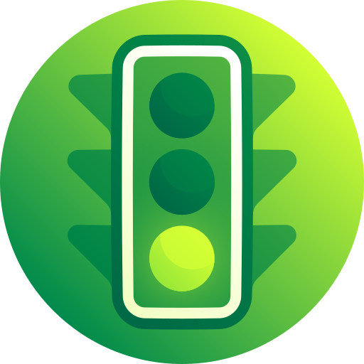
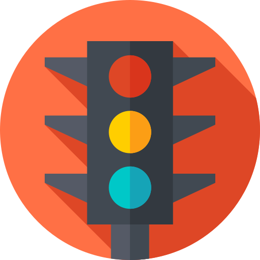

<nav class="navbar navbar-dark bg-dark">
  <a class="navbar-brand">
    
    Traffic light game
  </a>
  <button class="btn btn-secondary" (click)="back()">Back</button>
</nav>
<div class="container" *ngIf="player">
  <h1>Welcome {{ player.nickName }}</h1>
  <h2>Highscore: {{ player.maxScore }}</h2>
  <h2>Score: {{ player.score }}</h2>
  <ng-container *ngIf="color === 'green'; else red">
    
  </ng-container>
  <ng-template #red>
    
  </ng-template>
  <div class="buttons">
    <button mat-raised-button mat-button color="primary" (click)="move('left')">
      Left
    </button>
    <button mat-raised-button color="primary" (click)="move('right')">
      Right
    </button>
  </div>
</div>
